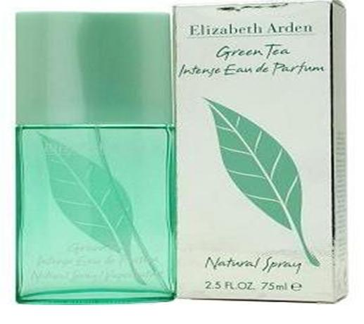

НАЙ-НИЦКИТЕ ЦЕНИ НА ПАРФЮМИ
ГАРАНТИРАНО КАЧЕСТВО
Дамски парфюми
Някои от прекрасни предложения за дами.
Roberto Cavalli Serpentine

Roberto Cavalli Serpentine е прекрасен аромат за жени, които обичат да се обграждат с лукс. Златно бижу, така може да се нарича парфюмът Serpentine. В красив флакон се крие уникален вид миризма, достойна за истинските жени. Заради сладкия мирис на специфична водна лилия, манго и цитруси, комбинирани с нежни подправки и дървесина, ароматът Roberto Cavalli Serpentine ще се превърне в истински скъпоценен камък във Вашите ръце.
Elizabeth Arden Green Tea
Освежаващи цитрусови нотки, ревен и бергамот в комбинация с нежен аромат на кимион. В сърцевината на този зашеметяващ аромат ще откриете акценти на жасмин, карамфил, копър и семена на целина. Уханието на дъбов мъх, бяла амбра и съблазняващ мускус е неповторимо. Този приятен ефирен аромат на Elizabeth Arden е Вашето перфектно средство за освежаване в горещите летни дни.
Мъжки парфюми
Някои от прекрасни предложения за мъже.
Calvin Klein Truth for Men

Тоалетната вода Calvin Klein Truth for Men, изобилства от чувствени акорди, е петият поред мъжки аромат на Calvin Klein. Излиза на пазара през 2002г. заедно с Truth for Women. Замисълът на този аромат е да кореспондира с природата – такъв е и съставът му. Аромат, който подчертава силата и естествената чувствителност на мъжете. Truth for Men е специално създаден за мъжете, които биха искали да се насладят на дълготрайното усещане за свежест.
Mont Blanc Legend
Тоалетната вода Legend излиза на пазара през 2011 г., и въпреки че е все още сравнително млад , той има всички предпоставки да се превърне в истинска легенда . Парфюмът е вдъхновен от " легендарните " ценности , които правят един човек - честност, увереност , самодисциплина , смелост, страст и сексапил . Той е проектиран така, че тези ценности са подчертани и засилени . Той съчетава сила и нежност, традиция , но и модерен стил.